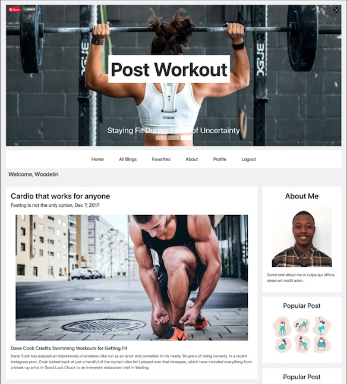
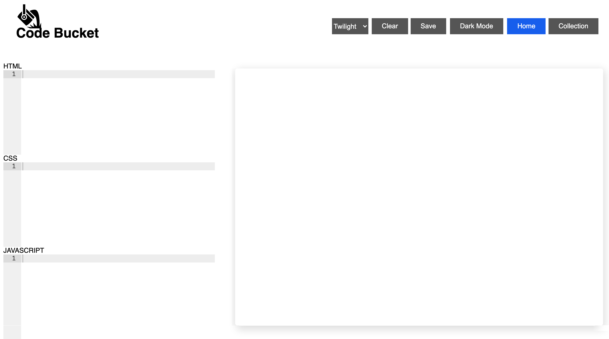

Woodelin
- FullStack-Developer
- Graphic Designer
- Brooklyn, New York
- Woodelinflorveus@gmail.com
Skills
Language
English
Haitian Creole
About me
Projects

Title: Post Workout
Date: 04/12/21
A fitness blog app where users can create an account and post blogs for a growing fitness community.

Title: Code-Bucket
Date: 03/11/21
A web application that allows programmers to choose their preferred language and test their code.
Title: Portfolio
Date: 06/12/21
A website that showcases my skills, education, and brief intro about me.
Education
School: Flatiron School
Date:12/02/20
Full Stack Web Developer Certification
School: Borough Manhattan Of Community College
Date:05/2017
Associates in Graphic Desgin